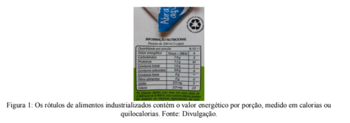
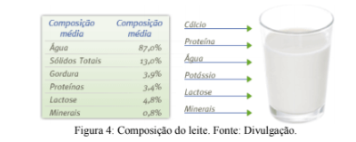
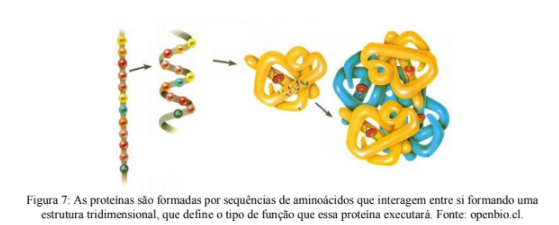
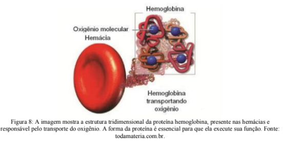

Capítulo 1
ÉTICA AMBIENTAL E DESENVOLVIMENTO SUSTENTÁVEL DAS INDÚTRIAS
Uma pergunta:É possível garantir o desenvolvimento humano e ainda assim manter o nosso planeta em condições de receber e sustentar as próximas gerações?
Talvez você já tenha percebido que todas as atividades humanas impactam o meio ambiente. As matérias-primas para a produção de roupas, alimentos, construções (entre outros) são sempre retiradas na natureza. Além da retirada de recursos há também o descarte de rejeitos, ou seja, de itens indesejados.
Milhares de pessoas têm se dedicado a estudar como resolver essa questão e milhões de pessoas acham que isso é pouco importante. Afinal, devemos nos preocupar com isso? Vamos analisar o gráfico abaixo (figura 1):
Observando o gráfico, percebemos que há quase 100 anos o crescimento populacional humano é intenso. Em apenas 65 anos a população mundial cresceu 47%, enquanto que nos 150 anos anteriores o crescimento médio foi de apenas 14%. E as estimativas indicam que provavelmente seremos mais de 10 bilhões de pessoas no ano de 2100. Vamos somar isso à outra informação: a quantidade de recursos que retiramos do ambiente é maior do que o tempo necessário para a recuperação desse "estoque".
Se mantivermos esse ritmo não será possível suprir as condições mínimas de existência para as pessoas e dos outros seres vivos.
Nas indústrias essa contradição é muito fácil de perceber. Para o processo produtivo são necessárias toneladas de matéria-prima e depois disso ainda há uma grande quantidade de descartes que precisa ser depositada em algum lugar. Mesmo que o cenário não seja nada bom, isso não significa que é impossível conciliar as atividades humanas com a preservação do nosso planeta.
Acesse o vídeo clicando no link a seguir:
Você já escutou a palavra sustentabilidade? Provavelmente, sim. E você sabe o que ela significa? Ela está totalmente relacionada ao que estávamos discutindo acima. É esse conceito que vai nos ajudar a responder à questão que inicia esse capítulo.
Sustentabilidade ou desenvolvimento sustentável significa usufruir dos recursos ambientais na atualidade sem o comprometimento das gerações futuras. A ideia é criar e aplicar uma série de práticas, aliadas muitas vezes a tecnologias, para que possamos construir uma sociedade economicamente viável, socialmente justa e ambientalmente correta. Ou seja, a sustentabilidade não está relacionada exclusivamente à preservação da natureza. Ela existe quando as questões sociais, ambientais e econômicas são articuladas para a tomada de decisões. Esses são os três pilares da sustentabilidade (figura 2), sem considerar o ambiente, a economia e a sociedade é impossível garantir o futuro humano.

As ações dessas entidades (por exemplo, WWF e Greenpeace) impulsionaram a organização de conferências mundiais, como a Ia Conferência das Nações Unidas sobre o Meio Ambiente Humano (1972), em Estocolmo na Suécia, que reuniu organizações governamentais de todo planeta. Foi um marco, pois, pela primeira vez, os chefes de governo debateram a degradação ambiental.
Acesse o vídeo clicando no link a seguir:
Essas discussões alertaram para a necessidade de aplicar práticas sustentáveis em todos os setores da sociedade. Você provavelmente já notou que várias indústrias têm se adequado às normas de sustentabilidade. A Indústria Metalúrgica é apontada como uma das grandes poluidoras e tem grande potencial para se aliar às práticas sustentáveis. Existem tecnologias sustentáveis alternativas desde o processo de mineração, segurança do trabalhador, tratamento de água contaminada por elementos tóxicos, até a reciclagem de materiais produzidos.
RELEMBRANDO A HISTÓRIA:As Conferências das Nações Unidas são espaços de debate importantíssimos, pois reúnem representantes de diversos países e estabelecem acordos de cooperação. O nosso país já sediou duas grandes conferências que se dedicavam ao meio ambiente (figura 3).
Em 1992 ocorreu no Rio de Janeiro a RIO92, maior conferência sobre o ambiente e o futuro da humanidade. Mais de cem chefes de estado compareceram e as discussões eram sobre um modelo econômico menos consumista e mais preocupado com as questões ambientais. Emissão de CO2, disponibilidade de água no planeta, reciclagem de resíduos, energia alternativa foram temas que tiveram muita visibilidade durante a RIO92. Em 2012 aconteceu a Rio+20, que deu continuidade às discussões da RIO92. Infelizmente, poucas mudanças aconteceram no intervalo de 20 anos entre as conferências.
(RE)CONSTRUINDO CONHECIMENTOSAs tecnologias e práticas sustentáveis que adotamos em nossa vida cotidiana e nas empresas onde trabalhamos estão bastante associadas aos conhecimentos de Ecologia (uma das áreas da Biologia).
PARA ENTENDER MAIS...
A Ecologia estuda as interações dos seres vivos. A vida como conhecemos hoje é mantida por uma rede complexa de interações.
Acesse o vídeo clicando no link a seguir:
Pequenas alterações nessa rede podem desencadear problemas sérios. Por exemplo, a construção de um silo para estoque de cereais pode ocasionar uma epidemia de toxoplasmose em um bairro rural. Você consegue explicar como isso é possível? Antes de continuar lendo tente propor uma resposta!
Não existe uma única explicação, mas uma possibilidade é que a grande disponibilidade de alimento (os grãos estocados) atraia roedores, como ratos. Quanto mais roedores houver, maior a chance da transmissão de parasitas (causadores de doenças) entre eles, inclusive daquele responsável pela toxoplasmose. Esse parasita modifica algumas funções cerebrais dos ratos fazendo com que eles deixem de fugir de predadores, por exemplo, de gatos. Você já conseguiu imaginar onde vamos chegar? Bom, agora existem muito mais ratos e vários deles estão contaminados com um parasita que os transformaram em presas fáceis para os gatos que saem de casa para um passeio. Ao caçarem esses ratos, os gatos também adquirem o parasita e, quando retornam para perto das pessoas, podem transmitir a doença.
Você percebeu como pequenas mudanças nas redes de interações podem provocar desequilíbrios ecológicos graves? Consegue pensar em outros exemplos?
A Ecologia tem registrado mudanças drásticas nas redes de interações ao longo dos últimos 100 anos. E a causa dessas mudanças fora do comum são as atividades humanas. Elas são tão intensas que são responsáveis por mudanças climáticas graves, consequência do aumento de intensidade do Efeito Estufa.
O Efeito Estufa é um fenômeno essencial, sem ele a Terra não possuiria uma temperatura estável e, provavelmente, a vida como a conhecemos não existiria. Os gases da atmosfera mantém a temperatura média de 15°C mesmo quando a luz do Sol não está chegando. Se não houvesse o Efeito Estufa a temperatura média poderia ser de -18°C (isso mesmo, dezoito graus abaixo de zero).
O Efeito Estufa é um fenômeno essencial, sem ele a Terra não possuiria uma temperatura estável e, provavelmente, a vida como a conhecemos não existiria. Os gases da atmosfera mantém a temperatura média de 15°C mesmo quando a luz do Sol não está chegando. Se não houvesse o Efeito Estufa a temperatura média poderia ser de -18°C (isso mesmo, dezoito graus abaixo de zero).
O problema é que a quantidade de carbono liberado na queima de combustíveis fósseis (diesel, gasolina, carvão, etc) é muito grande e ele acaba ficando acumulado na atmosfera. Isso faz com que o calor também fique acumulado.

Desde meados do século XX, as informações coletadas por pesquisas geomorfológicas indicam que a Terra possui sucessivos ciclos de resfriamento e aquecimento. Cada período de resfriamento é conhecido como Era do Gelo e as evidências da ocorrência de glaciações (congelamento do ambiente), durante esses períodos, demonstram que muitas espécies foram extintas. Pois bem, hoje a ciência aponta que nós estamos saindo de um período de resfriamento e nos encaminhando para um período de aquecimento. A temperatura média irá aumentar progressivamente. O fato é que, alguns analistas alertam que isso está acontecendo rápido demais. Os ciclos de resfriamentos e aquecimentos pelos quais a Terra já passou se estendiam por milhares de anos. Isso permitiu que as espécies pudessem gradualmente se adaptar às novas condições climáticas.
A intensidade das atividades humanas está tornando o processo de aquecimento do planeta tão rápido que diversos ecossistemas têm desaparecido sem dar origem a espécies capazes de sobreviver nessas novas condições.
As plantas utilizam gás carbônico (CO2) para produzir o seu próprio alimento através da fotossíntese. Todos os seres vivos expiram este mesmo gás no processo de respiração e a interação de ambos os processos mantém o Efeito Estufa estável, a quantidade liberada na respiração é captada na fotossíntese. Mas o CO2 dos combustíveis fósseis não pertence a esse ciclo. O gás carbônico (CO2) também é um produto da combustão ou queima de matéria orgânica, por exemplo, petróleo e carvão mineral. Como temos utilizado uma grande quantidade de combustíveis fósseis, o carbono tem se acumulado em quantidades cada vez maiores na atmosfera, potencializando o Efeito Estufa. O CO2 não é o único responsável, o metano (CH4), óxidos de nitrogênio, ozônio (O3) também contribuem para transformar a Terra em uma estufa, mas as suas emissões ocorrem em menor quantidade. Para desacelerar esse processo, é essencial que comecemos a utilizar tecnologias sustentáveis, como fontes alternativas de energia (por exemplo, eólica e solar).
Além dos combustíveis fósseis, os desmatamentos e as queimadas preocupam cada vez mais, pois além de promover o aumento do Efeito Estufa também levam à perda de diversidade da vida (extinção de espécies). O desmatamento porque, uma vez que a cobertura vegetal seja retirada, menor quantidade de CO2 acaba sendo absorvida para as plantas (lembra-se do equilíbrio entre fotossíntese/respiração?) e as queimadas porque aumentam a combustão e, por consequência, a emissão de mais CO2.
UMA PAUSA PARA PENSAR
Você já pensou por que as queimadas e desmatamento levam à extinção de espécies?
Observe as imagens abaixo e formule algumas hipóteses a respeito (figura 5):

A sustentabilidade está na forma como produzimos, mas também na forma como descartamos as coisas.
O conceito de “lixo” é uma invenção humana. Os resíduos na natureza são gerados por todos os seres vivos e são reciclados através da ação de decompositores, que se encarregam da limpeza de todos os ambientes. Já a sociedade humana produz milhões de toneladas de lixo que não é biodegradável (ou seja, não é decomposto). Isso implica o desenvolvimento de práticas e tecnologias que deem conta de encaminhar esse lixo para o destino correto. O que na maioria dos casos não acontece (tabela 1).
Tabela 1: Produção de lixo plástico no mundo. O Brasil é o quarto maior produtor de lixo plástico e o que menos recicla. Apenas 1,28% do lixo plástico produzido são reciclados. Fonte: WWF Brasil.
Desde 2010, temos no Brasil, o Plano Nacional de Resíduos Sólidos (PNRS) promulgado pelo Congresso Nacional, que, segundo o Ministério do Meio Ambiente, prevê a prevenção e a redução na geração de resíduos, tendo como proposta a prática de hábitos de consumo sustentável e um conjunto de instrumentos para propiciar o aumento da reciclagem e da reutilização dos resíduos sólidos (aquilo que tem valor econômico e pode ser reciclado ou reaproveitado) e a destinação ambientalmente adequada dos rejeitos (aquilo que não pode ser reciclado ou reutilizado).
A sustentabilidade é uma forma de pensar o mundo para garantir a manutenção dos processos ecológicos. Sem esses processos a vida não se sustenta no planeta. A preocupação com o bem-estar dos outros seres vivos e com as consequências negativas das nossas ações é um princípio ético que devemos fomentar tanto nos processos de produção quanto de descarte envolvidos nas atividades humanas. É possível aliar desenvolvimento e sustentabilidade, para isso é necessário repensar hábitos antigos e apostar nas novas tecnologias e nas pessoas, que são os únicos capazes de resolver esse problema!
AÇÃO E REFLEXÃO
Você já ouviu falar dos Rs da sustentabilidade?As práticas sustentáveis envolvem o uso racional dos recursos naturais. Oberve a imagem abaixo (figura 6) e relacione que foi discutido ao longo desse capítulo com cada uma das palavras. O que elas significam e como podemos aplica-las na nossa vida pessoal e no nosso local de trabalho?
O QUE APRENDI: